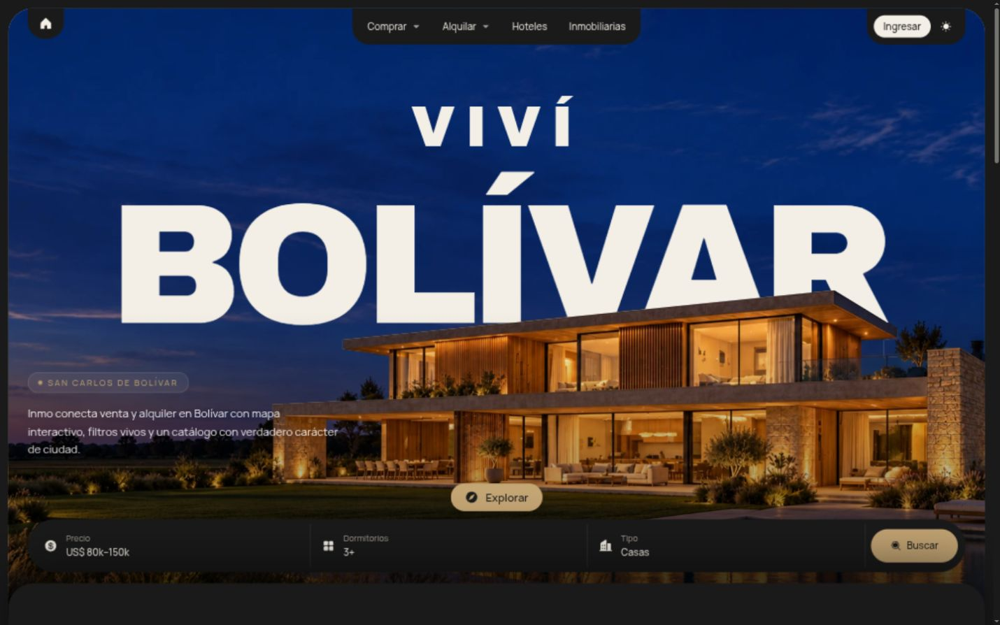
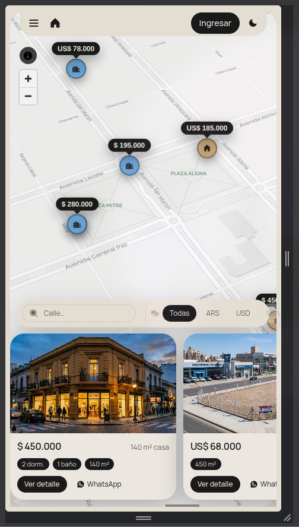

Catálogo común
Casas, departamentos, terrenos, campos, locales y quintas de todas las inmobiliarias, con filtros.
UNA PLATAFORMA LOCAL
Una plataforma local que reúne la oferta de las inmobiliarias de la ciudad y lleva cada consulta directo al profesional responsable.

Una plataforma web para usar desde el celular o la computadora, sin descargar nada. Funciona sobre cinco ideas:
Casas, departamentos, terrenos, campos, locales y quintas de todas las inmobiliarias, con filtros.
Recorrer la ciudad y ver qué hay disponible en cada zona.
Fotos, videos, ubicación, precio, características y profesional responsable.
Perfil propio con logo, contacto y todas sus propiedades.
WhatsApp, teléfono o formulario con la inmobiliaria. La operación sigue siendo suya.
